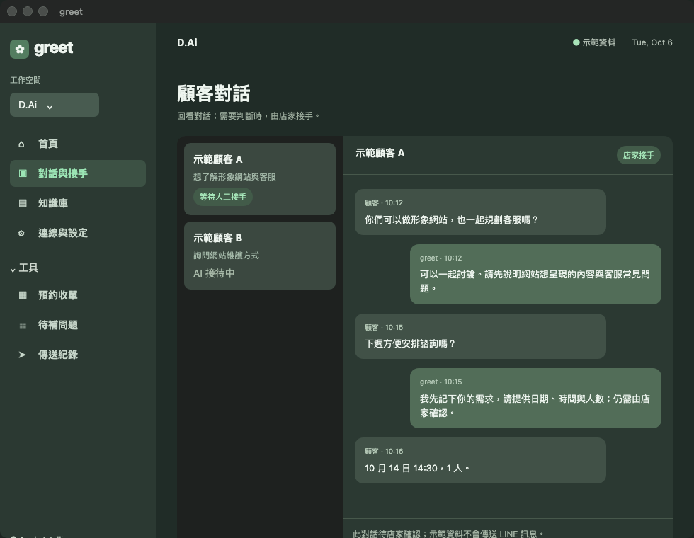
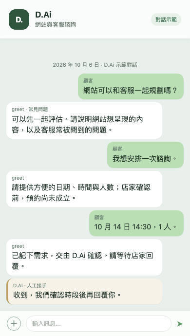

打開工作台，看見每一步。
接手時，對話看得完整
顧客訊息集中在這裡；你接手後，這段對話的 AI 會暫停。

示範畫面 · D.Ai點開看大圖 ↗
對話示範
常見問題先回覆，
重要需求由人確認。
以下為概念示意。日期、時間、人數與報價等需求，由店家查看對話後確認；自動追問與交接格式會在導入時評估。
- 顧客提出問題
- 常見問題以 FAQ 回覆
- 重要需求由真人確認


使用環境與導入條件
需自備 macOS 27 以上、支援 Apple Intelligence 的 Mac，讓接待服務運行、保持網路連線並完成模型設定。LINE 串接與實際回覆須在店家環境驗收；LINE 與第三方服務費用依實際方案確認。
導入服務包含什麼？
D.Ai 協助整理商家 FAQ、設定 LINE 串接，並測試回覆與人工交接；交付內容依需求確認。
可以自動完成預約或報價嗎？
重要需求與報價由真人確認。自動追問、結構化交接或串接預約系統，會在導入時另行評估範圍與驗收方式。
FAQ 如何維護？
依商家最新的營業時間、服務與常見問題更新內容，再核對回覆。D.Ai 提供 FAQ 維護方案，時數與範圍以方案說明為準。